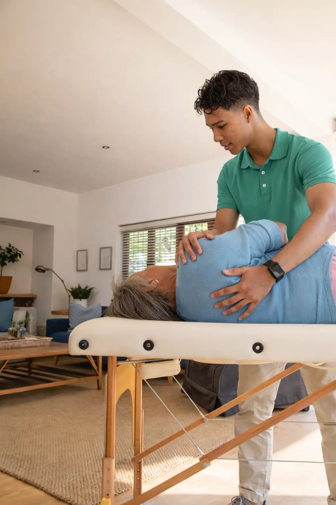
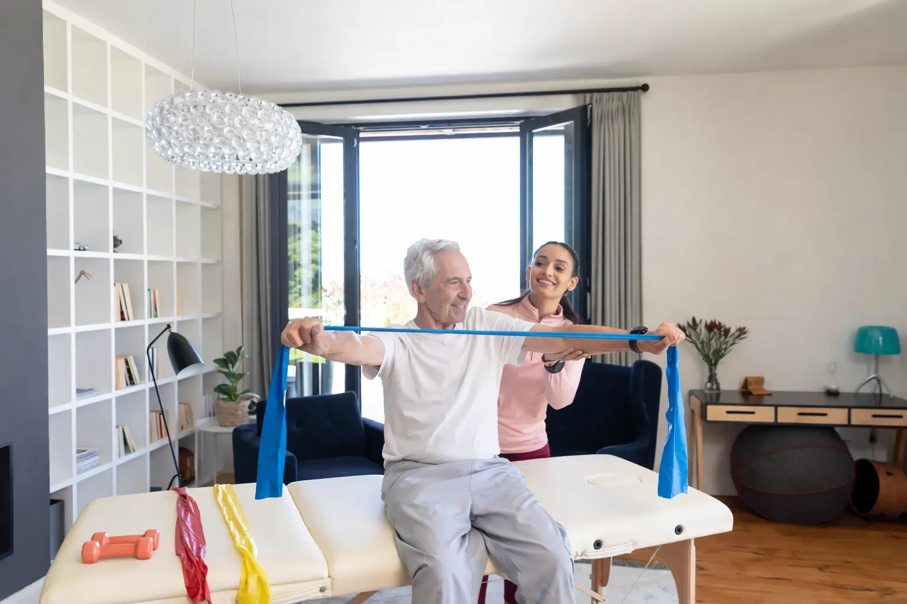
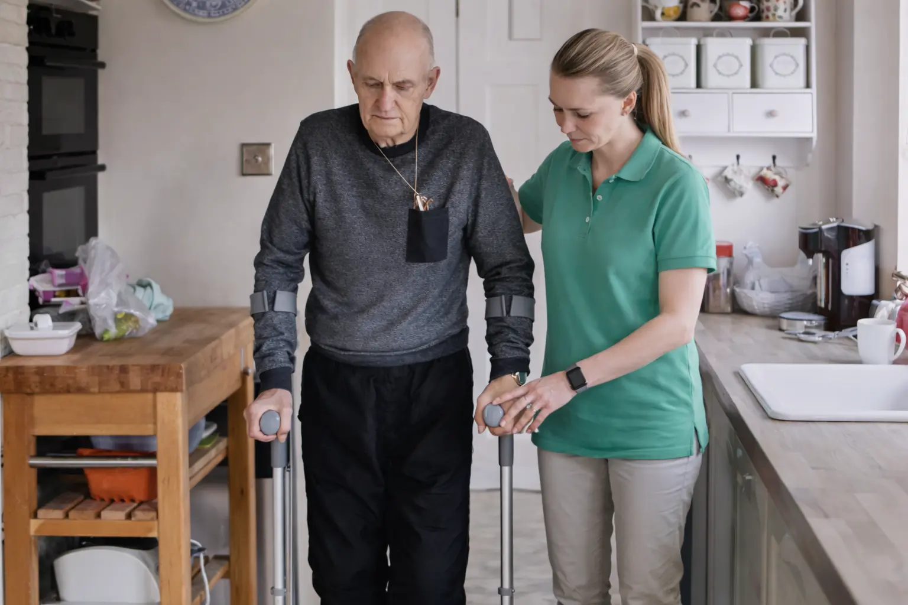

Mobile Physiotherapie in Murnau am Staffelsee – Physiotherapie Hausbesuch bei Ihnen zu Hause
Mobilis Physio bringt professionelle Physiotherapie direkt zu Ihnen nach Hause in Murnau am Staffelsee. Unsere staatlich anerkannten Physiotherapeuten kommen zu Ihnen und behandeln Sie professionell, einfühlsam und individuell — 60 Minuten, 125 €, alles inklusive – ohne Anfahrtsstress, ohne Wartezeit.
Was ist Physiotherapie als Hausbesuch in Murnau am Staffelsee?
Bei der Physiotherapie im Hausbesuch kommt ein qualifizierter Physiotherapeut direkt zu Ihnen nach Hause — anstatt dass Sie eine Praxis aufsuchen müssen. Sie erhalten die gleiche hochwertige Behandlung wie in einer stationären Einrichtung, jedoch in der vertrauten und entspannten Atmosphäre Ihrer eigenen vier Wände.
Mobile Physiotherapie eignet sich besonders für Menschen in Murnau am Staffelsee, die aus gesundheitlichen, altersbedingten oder logistischen Gründen nicht selbst in eine Praxis fahren können oder wollen. Ob nach einer Operation, bei chronischen Erkrankungen oder einfach aus Bequemlichkeit — die Krankengymnastik zu Hause bietet Ihnen volle therapeutische Versorgung ohne Kompromisse.
Unsere Therapeuten bringen alle notwendigen Materialien und Hilfsmittel mit und passen die Behandlung an Ihre häuslichen Gegebenheiten an. So wird Ihr Wohnzimmer, Schlafzimmer oder ein anderer geeigneter Raum zur privaten Behandlungsumgebung.
Für wen eignet sich mobile Physiotherapie in Murnau am Staffelsee?
Physiotherapie als Hausbesuch richtet sich an eine breite Zielgruppe. Besonders profitieren folgende Personengruppen von unserem mobilen Angebot:
- Senioren mit eingeschränkter Mobilität: Wenn der Weg zur Praxis zu beschwerlich oder riskant ist, bringen wir die Therapie zu Ihnen.
- Patienten nach Operationen: Nach einem Gelenkersatz, einer Wirbelsäulen-OP oder anderen chirurgischen Eingriffen ist die Rehabilitation zu Hause oft die sicherste und bequemste Lösung.
- Menschen mit neurologischen Erkrankungen: Bei Schlaganfall, Multipler Sklerose, Parkinson oder anderen neurologischen Diagnosen bieten wir spezialisierte Krankengymnastik im häuslichen Umfeld.
- Pflegebedürftige und deren Angehörige: Wir entlasten pflegende Angehörige und bringen professionelle Bewegungstherapie direkt zum Pflegebedürftigen — auch in Pflegeeinrichtungen.
- Berufstätige mit wenig Zeit: Kein Anfahrtsweg, keine Parkplatzsuche, keine Wartezeit. Physiotherapie am Abend oder am Wochenende, wenn es in Ihren Alltag passt.
- Eltern mit kleinen Kindern: Statt die Kinderbetreuung organisieren zu müssen, findet die Behandlung statt, während die Kinder im Bett sind oder betreut werden.
- Menschen mit Angststörungen oder Agoraphobie: Für Patienten, die ihre Wohnung nur schwer verlassen können, bietet der Hausbesuch eine diskrete und stressfreie Alternative.
Die Vorteile der Physiotherapie zu Hause – mehr als nur Bequemlichkeit
Ein Hausbesuch durch einen Physiotherapeuten bietet weit mehr als den offensichtlichen Komfort. Hier sind die wichtigsten Vorteile der mobilen Krankengymnastik in Murnau am Staffelsee:
Kein Anfahrtsstress, keine Wartezeit
Sie sparen wertvolle Zeit, vermeiden anstrengende Fahrten und müssen nicht im Wartezimmer sitzen. Ihr Therapeut kommt pünktlich zu Ihnen — auf die Minute genau.
Behandlung in vertrauter Umgebung
Zu Hause sind Sie entspannter und fühlen sich sicher. Studien zeigen, dass Patienten in vertrauter Umgebung besser auf die Therapie ansprechen und motivierter mitarbeiten.
Volle 60 Minuten Behandlungszeit
Jede Sitzung dauert volle 60 Minuten reine Therapiezeit. Kein Zeitdruck, kein hastiger Wechsel zum nächsten Patienten. Ihr Therapeut widmet sich ausschließlich Ihnen.
Individuelle Übungen für Ihren Alltag
Ihr Therapeut sieht Ihre reale Wohnumgebung und kann Übungen direkt an Ihren Alltag anpassen. Das steigert die Wirksamkeit der Heimübungen erheblich.
Kontinuität durch denselben Therapeuten
Bei uns kommt in der Regel immer derselbe Therapeut zu Ihnen. So entsteht ein Vertrauensverhältnis, das nachweislich den Therapieerfolg steigert.
Diskret und privat
Die Behandlung findet in Ihrem privaten Raum statt. Es gibt kein Wartezimmer, keine anderen Patienten und keine fremden Blicke — ideal bei sensiblen Beschwerden.
Geringeres Infektionsrisiko
Besonders für immungeschwächte Patienten und Senioren bietet die Behandlung zu Hause einen entscheidenden Vorteil: kein Kontakt mit anderen Patienten in einer Praxis.

Ablauf – So einfach funktioniert mobile Physiotherapie in Murnau am Staffelsee
Von der Anfrage bis zur Behandlung bei Ihnen zu Hause — in nur vier Schritten:
Schritt 1: Anfrage stellen
Kontaktieren Sie uns über unser Kontaktformular oder per E-Mail an info@mobilis-physio.de. Geben Sie dabei Ihre Adresse und den Grund der Behandlung an.
Schritt 2: Schnelle Rückmeldung
Wir melden uns in der Regel innerhalb von 24 Stunden bei Ihnen zurück und vereinbaren einen passenden Termin.
Schritt 3: Behandlung bei Ihnen zu Hause
Ihr Therapeut kommt mit allem notwendigen Equipment direkt zu Ihnen. Die Sitzung dauert volle 60 Minuten und wird individuell auf Ihre Beschwerden, Ziele und Ihre häusliche Umgebung abgestimmt.
Schritt 4: Nachhaltige Ergebnisse
Am Ende jeder Sitzung erhalten Sie gezielte Übungen für zu Hause. Ihr Therapeut dokumentiert den Behandlungsverlauf und passt den Plan bei jeder Sitzung an Ihre Fortschritte an.
Unsere Leistungen – Mobile Physiotherapie in Murnau am Staffelsee
Unsere Therapeuten bieten Ihnen ein breites Spektrum physiotherapeutischer Behandlungen direkt bei Ihnen zu Hause:
Rehabilitation nach Operationen und Verletzungen
Frührehabilitation nach Hüft- und Knie-TEP, Kreuzband-OP, Schulter-OP, Wirbelsäulenoperationen oder Frakturen. Strukturierte Therapie für eine sichere und schnelle Rückkehr in Alltag und Aktivität.
Therapie bei Schmerzen
Individuelle Behandlung bei Rücken-, Nacken- und Gelenkschmerzen zur nachhaltigen Linderung und Verbesserung Ihrer Beweglichkeit. Häufig behandelte Beschwerdebilder: Bandscheibenvorfall, Arthrose, Schultersteife (Frozen Shoulder), Tennisellenbogen, Karpaltunnelsyndrom, Fibromyalgie, Migräne und Spannungskopfschmerzen.
Eingeschränkte Mobilität und Physiotherapie im Alter
Gezielte Förderung Ihrer Beweglichkeit für mehr Sicherheit und Unabhängigkeit im Alltag. Speziell angepasst an die Bedürfnisse älterer Patienten — bei Immobilität, Muskelschwäche, Osteoporose oder Demenz-begleitender Bewegungstherapie.
Neurologische Erkrankungen (KG-ZNS)
Spezialisierte Behandlung auf neurophysiologischer Basis nach Bobath, PNF oder Vojta. Für Patienten mit Schlaganfall, Multipler Sklerose, Morbus Parkinson, ALS, Polyneuropathie oder nach Schädel-Hirn-Trauma — direkt bei Ihnen zu Hause.
Schwindel und Gleichgewichtsstörungen
Gezielte Übungen zur Verbesserung von Gleichgewicht, Standsicherheit und Sturzprävention bei Lagerungsschwindel, vestibulären Störungen oder erhöhter Sturzneigung — in Ihrem häuslichen Umfeld, wo die meisten Stürze passieren.
Atemwegserkrankungen
Therapeutische Maßnahmen zur Verbesserung der Atmung und Lungenkapazität — bei COPD, Asthma, Post-COVID-Syndrom oder bei bettlägerigen Patienten.
Jetzt Termin vereinbaren — wir melden uns innerhalb von 24 Stunden.
Anfrage stellenUnsere physiotherapeutischen Methoden
Je nach Beschwerdebild setzen unsere Therapeuten in Murnau am Staffelsee verschiedene evidenzbasierte Methoden ein:
- Krankengymnastik (KG) — Aktive und passive Übungen zur Wiederherstellung von Beweglichkeit, Kraft und Koordination.
- Manuelle Therapie (MT) — Gezielte Handgriffe zur Lösung von Gelenkblockaden und Behandlung von Muskelverspannungen.
- Manuelle Lymphdrainage (MLD) — Sanfte Grifftechniken zur Entstauung bei Lymphödem, Lipödem oder nach Lymphknotenentfernung.
- Atemtherapie — Spezielle Techniken zur Verbesserung der Atmung und Lungenkapazität.
- Massagetherapie — Klassische Massage, Triggerpunkttherapie und Faszientechniken zur Schmerzlinderung und Entspannung.
- Individuelle Bewegungstherapie — Maßgeschneiderte Übungsprogramme angepasst an Ihre Wohnumgebung und persönlichen Ziele.
Einsatzgebiet: Mobile Physiotherapie in Murnau am Staffelsee und Umgebung
Unsere Physiotherapeuten sind in Murnau am Staffelsee und den umliegenden Gemeinden für Sie unterwegs. Wir decken sowohl das Stadtgebiet als auch das nähere Umland ab.

Unser Einsatzgebiet umfasst unter anderem:
- Murnau am Staffelsee – alle Ortsteile (Hechendorf, Seehausen am Staffelsee)
- Uffing am Staffelsee, Großweil, Ohlstadt
- Riegsee, Spatzenhausen, Schwaigen
- Weitere Orte im Umkreis von ca. 20 km
Ihr Ort ist nicht aufgeführt? Kontaktieren Sie uns — wir prüfen gerne, ob wir auch in Ihrer Gegend tätig sind.
Wann brauche ich ein Rezept für Physiotherapie als Hausbesuch?
Bei akuten oder chronischen Erkrankungen sowie Verletzungen ist in der Regel ein ärztliches Privatrezept erforderlich, das Ihr Haus- oder Facharzt ausstellt. Mit einem gültigen Rezept können Sie die Kosten bei Ihrer privaten Krankenversicherung zur Erstattung einreichen.
Ihr Arzt kann Physiotherapie als Hausbesuch verordnen, wenn medizinische Gründe vorliegen – etwa bei eingeschränkter Mobilität nach einer OP, schweren neurologischen Erkrankungen (Schlaganfall, MS, Parkinson), hohem Sturzrisiko, Bettlägerigkeit oder starken Schmerzen.
Für rein präventive Maßnahmen wie Bewegungstraining oder Sturzprävention ist kein Rezept nötig – diese Leistungen können Sie direkt als Selbstzahler buchen.
Unser Therapeuten-Netzwerk in Murnau am Staffelsee
Hinter Mobilis Physio steht ein wachsendes Netzwerk aus staatlich anerkannten und erfahrenen Physiotherapeuten. Alle Therapeuten in unserem Team verfügen über:
- Staatliche Anerkennung: Jeder Therapeut ist staatlich geprüft und zugelassen.
- Umfangreiche Fortbildungen: Spezialisierungen in Manueller Therapie, neurologischer Rehabilitation (Bobath, PNF, Vojta), Lymphdrainage und Sportphysiotherapie.
- Langjährige Berufserfahrung: Fundierte klinische Erfahrung aus Praxen, Kliniken und der mobilen Versorgung.
- Regionale Verwurzelung: Unsere Therapeuten in Murnau am Staffelsee leben und arbeiten vor Ort — kurze Anfahrtswege inklusive.
Warum Mobilis Physio für Physiotherapie Hausbesuche in Murnau am Staffelsee wählen?
- Staatlich anerkannte Therapeuten: Alle Physiotherapeuten sind staatlich examiniert und verfügen über umfangreiche Zusatzqualifikationen.
- Volle 60 Minuten Behandlungszeit: Bei uns bekommen Sie die volle Stunde — keine verkürzten Sitzungen, kein Zeitdruck.
- 125 € all-inclusive: Ein transparenter Preis für alles — Anfahrt, Equipment und individueller Behandlungsplan inklusive.
- Schnelle Rückmeldung: Nach Ihrer Anfrage melden wir uns in der Regel innerhalb von 24 Stunden bei Ihnen.
- Fester Therapeut: Sie werden durchgehend vom selben Therapeuten betreut.
- Flexible Termine: Montag bis Freitag 08:00–19:00 Uhr, Wochenende gegen Aufpreis möglich.
- Breites Leistungsspektrum: Von Krankengymnastik über Manuelle Therapie und Lymphdrainage bis hin zu neurologischer Rehabilitation.
- Regionaler Bezug: Unsere Therapeuten kennen Murnau am Staffelsee und die umliegende Region.
Häufig gestellte Fragen (FAQ) zur Physiotherapie als Hausbesuch in Murnau am Staffelsee
Eine Sitzung kostet 125 € für 60 Minuten Behandlung. Darin enthalten sind Anfahrt, komplettes Therapieequipment und ein individueller Behandlungsplan. Keine versteckten Kosten. Privatpatienten können die Rechnung direkt bei Ihrer Versicherung einreichen. Termine am Wochenende sind gegen einen Aufpreis ebenfalls möglich.
Das hängt vom Behandlungsgrund ab. Bei akuten oder chronischen Erkrankungen sowie Verletzungen ist in der Regel ein ärztliches Privatrezept erforderlich. Ihr Arzt kann einen Hausbesuch verordnen, wenn medizinische Gründe vorliegen – etwa bei eingeschränkter Mobilität, neurologischen Erkrankungen, Bettlägerigkeit oder starken Schmerzen. Für präventive Maßnahmen ist kein Rezept notwendig.
Nach Ihrer Anfrage melden wir uns in der Regel innerhalb von 24 Stunden bei Ihnen zurück und vereinbaren einen passenden Termin.
Viele private Krankenversicherungen erstatten physiotherapeutische Hausbesuche — je nach Tarif vollständig oder teilweise. Sie erhalten von uns eine ordentliche Rechnung zur Einreichung bei Ihrer PKV.
Unser Leistungsspektrum umfasst Krankengymnastik, Manuelle Therapie, Lymphdrainage, neurologische Physiotherapie (Bobath, PNF, Vojta), Atemtherapie, medizinische Massage, Rehabilitation nach Operationen, Sturzprävention und individuelles Bewegungstraining.
Sie stellen eine Anfrage über unser Kontaktformular oder per E-Mail. Wir melden uns innerhalb von 24 Stunden und vereinbaren einen Termin. Ihr Therapeut kommt mit allem notwendigen Equipment zu Ihnen nach Hause und führt eine 60-minütige Behandlung durch.
Ja, wir legen großen Wert auf Kontinuität. Sie werden in der Regel durchgehend vom selben Therapeuten betreut.
Stellen Sie sicher, dass Sie zum vereinbarten Termin zu Hause sind und 60 Minuten Zeit haben. Tragen Sie bequeme Kleidung. Falls vorhanden, halten Sie ärztliche Unterlagen bereit. Alles Weitere bringt Ihr Therapeut mit.
Ja, Termine am Wochenende sind gegen einen Aufpreis möglich. Unsere regulären Zeiten sind Montag bis Freitag 08:00–19:00 Uhr.
Wir sind in Murnau am Staffelsee und Umgebung für Sie unterwegs, darunter Uffing, Großweil, Ohlstadt, Riegsee und weitere Gemeinden im Umkreis. Kontaktieren Sie uns mit Ihrer Postleitzahl — wir prüfen gerne die Verfügbarkeit.

Jetzt Termin für Physiotherapie Hausbesuch in Murnau am Staffelsee vereinbaren
Sie möchten professionelle Physiotherapie bequem bei sich zu Hause erhalten? Unser Team freut sich auf Ihre Anfrage und meldet sich in der Regel innerhalb von 24 Stunden bei Ihnen.
- E-Mail: info@mobilis-physio.de
- Kontaktformular: Jetzt Anfrage stellen
125 € pro Sitzung · 60 Minuten · Anfahrt inklusive · Keine versteckten Kosten
Termin anfragen